BOSS BD-2 Blues Driver 解析
2022年06月24日 カテゴリー：修理・改造・解析
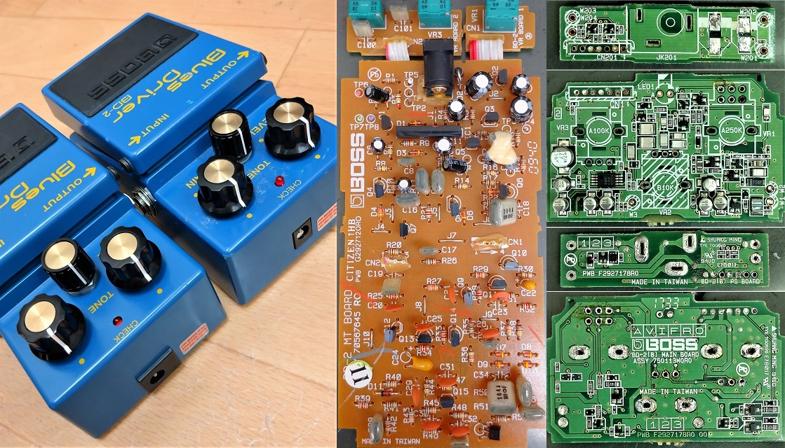
近年、BOSSコンパクトエフェクターはスルーホール部品（THD）ではなく表面実装部品（SMD）が使われているものへと中身が変更されている機種が出てきています。SMDバージョンの場合のDCジャックは、ケースにはめ込むタイプで横幅が長いです。今回は、BOSS BD-2のTHDバージョンとSMDバージョン両方について回路をトレースし解析します。KiCadとLTspiceの回路図データ、基板画像はGitHubにあります。
※各トランジスタのSpiceモデルはCQ出版社オンライン・サポート・サイトの「～モデルをLTSpiceに追加する」からダウンロードできます（会員登録が必要）。
分解する前にTHDバージョンとSMDバージョンを弾き比べてみましたが、特に違いは感じられませんでした。波形と周波数特性の実測データは下図です。歪率は20%に合わせています。
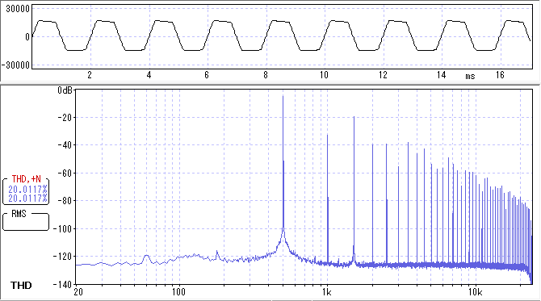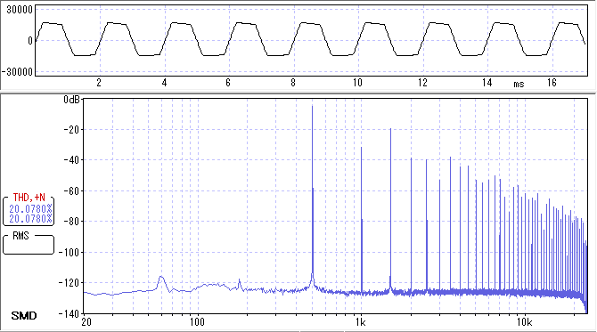
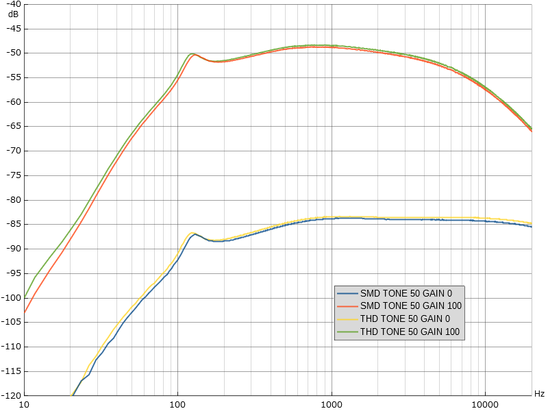
少しだけズレがありますが、部品の誤差の可能性があるので何とも言えません。
（2022年8月19日追記：THDバージョンは、470kΩ表記の抵抗R10が実測492kΩだったため、このズレによる影響が考えられます。）
▽基板画像
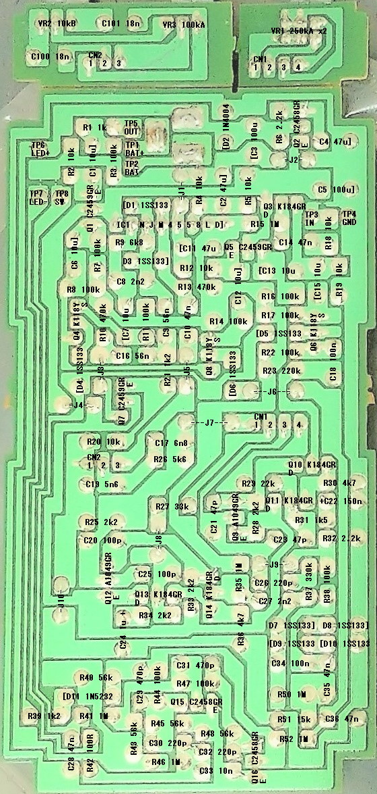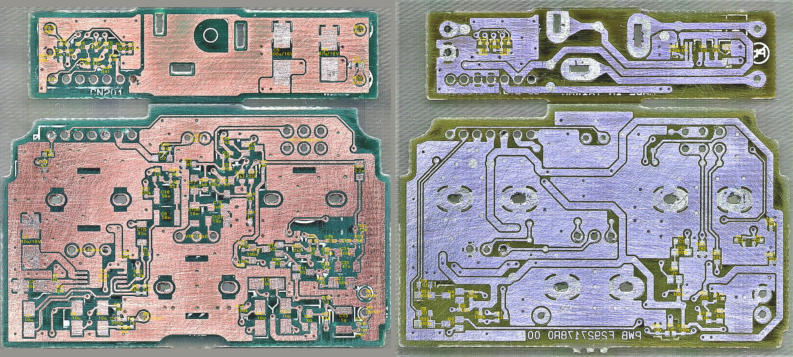
THDバージョンの基板は部品の向きがバラバラですが、BOSS OD-3（BD-2の2年後に発売）では向きが揃えてあり、実装しやすさが改善されていることがわかります。SMDバージョンは、部品番号がなく非常に小さいパーツ（1mm×0.5mm）が使われていたため難易度が高かったです（いくつかの部品を破損させてしまいました…）。SMDのフィルムコンデンサは高価なはずなので、THDバージョンより部品のコストは高くなっているかもしれません。
▽回路図（THD）
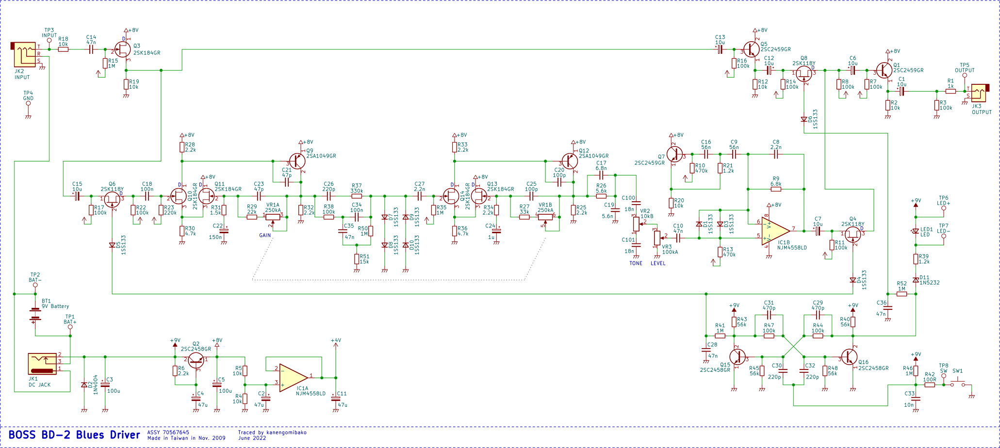
出回っている回路図は公式サービスノートのようなので間違いはないはずですが、一応同じかどうか確認しておきました。ツェナーダイオード、オペアンプの型番が変わっています。
▽回路図（SMD）
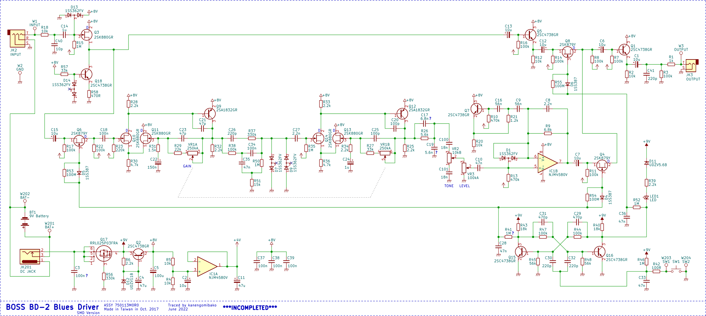
主にバッファと電源部の部品が増えています。THDのタンタルコンデンサが使われていたところはSMDでもタンタルコンデンサになっており、音が変わらないよう配慮されている様子がうかがえます。
- 入力のコンデンサC14
入力のコンデンサの容量が0.047μFから1μFへと大幅に増えています。音量低下を無視してシミュレーションすると、バイパス時20Hzで-0.12dBだったのが-0.004dBとなりました。相当な数を直列接続したとしても、低音域が減る心配はありません。
- 入力部FET
入力のFETのソースにつながる抵抗が定電流回路へと置き換わっています。DIYstompboxes.comの技クラフトのバッファに関するスレッドでは、定電流回路にすることで音量低下や歪率悪化が改善されると掲載されています。手持ちのFET 2SK303での実測データを下図に示します。
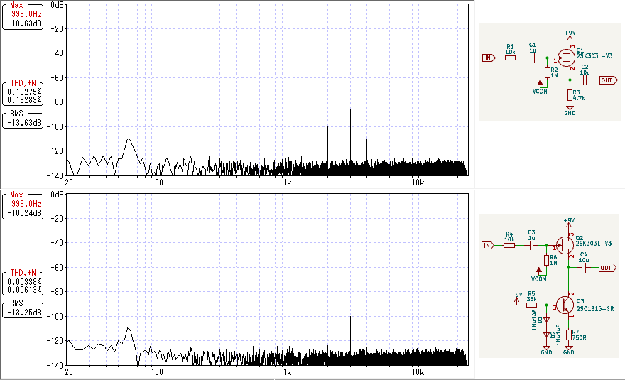
入力電圧は約2.2Vp-pで、できるだけ歪率が下がるよう抵抗値を調整しました。それなりに効果ありという結果となっています。ただし入力電圧が低い場合はもっと歪率が下がりますし、音質の違いを聞き分けるのは難しいかもしれません。
- 電源部
ACアダプターの逆接続対策として、P-ch MOSFETが使われています（参考資料：ローム社アプリケーションノート「リニアレギュレータの逆電圧保護」）。また、供給電圧が高い場合の対策と思われるツェナーダイオードD12が追加されています。
▽シミュレーション
それぞれのブロック毎の周波数特性を貼り付けておきます。
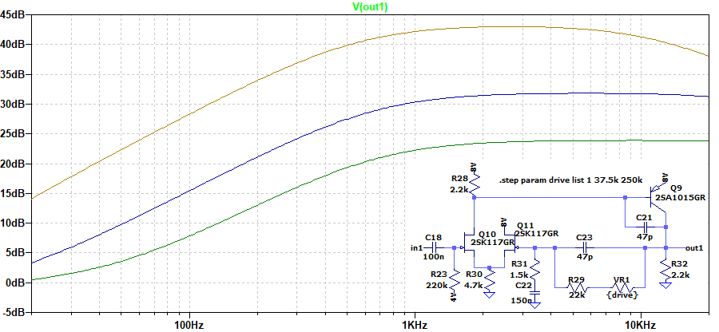
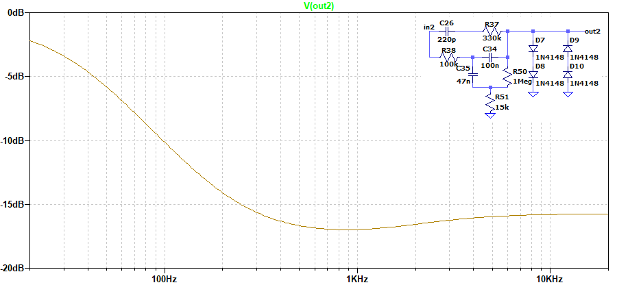
フェンダーアンプのトーン回路をBASS 100、TREBLE 0にした形に似ています。
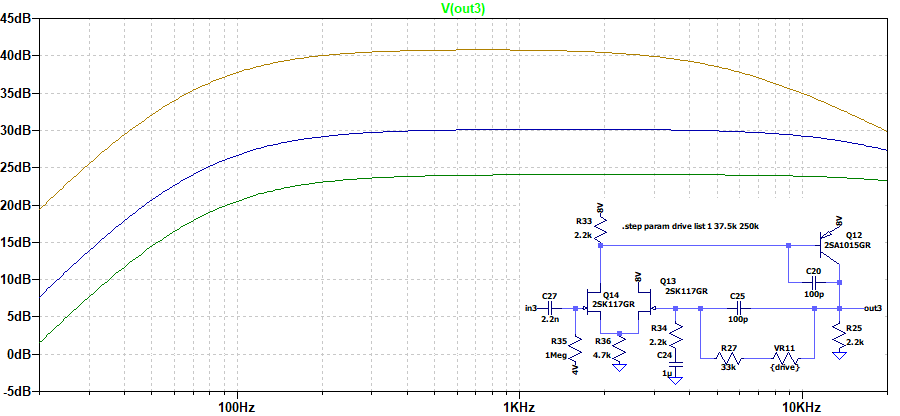
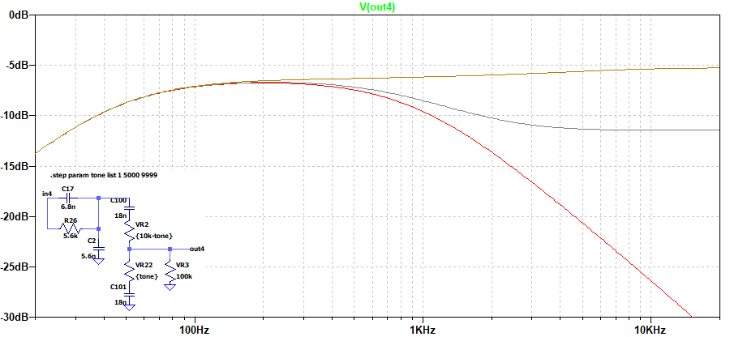
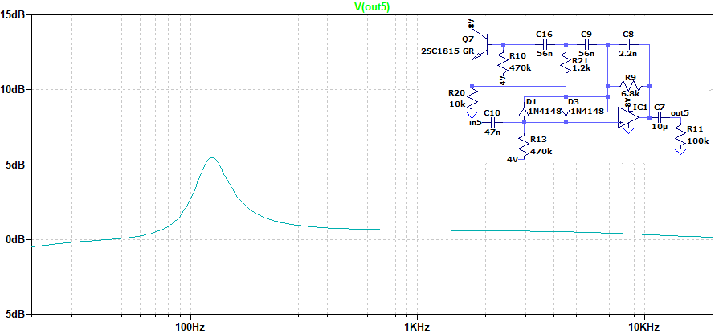
↓は上記全て通してのシミュレーションです（GAIN 50%、TONE 50%）。途中で歪ませているので一概に比較はできませんが、OD-3も載せています。
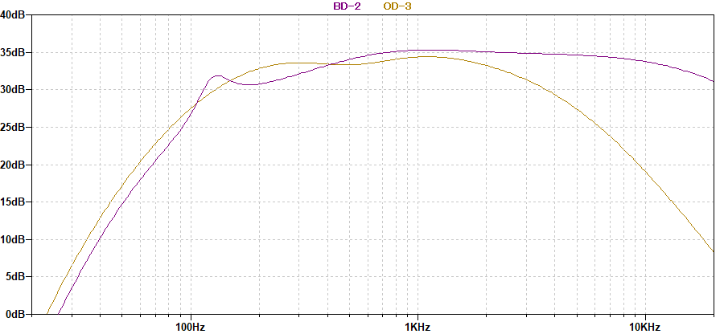
BD-2は高音域の減衰が少ないことがわかります。また、最後で125Hzを少し増幅して低音域を補強しているのが特徴的です。
---以下2023年5月20日追記---
▽GT-1000CORE内蔵BLUES ODとの比較
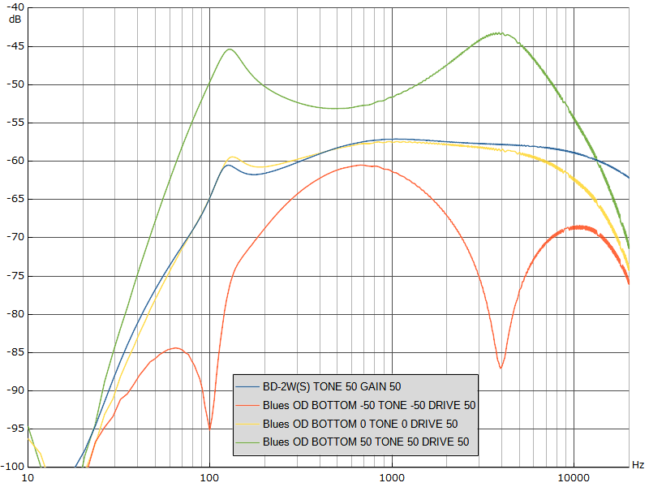
BLUES ODの方が少し高音域が下がっています。BOTTOM、TONEはグラフィックイコライザのような動きです。